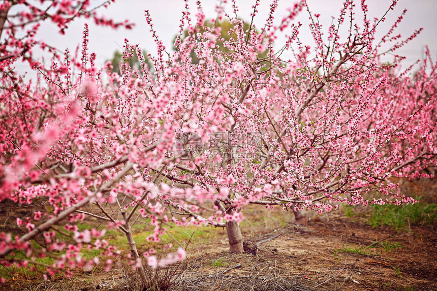
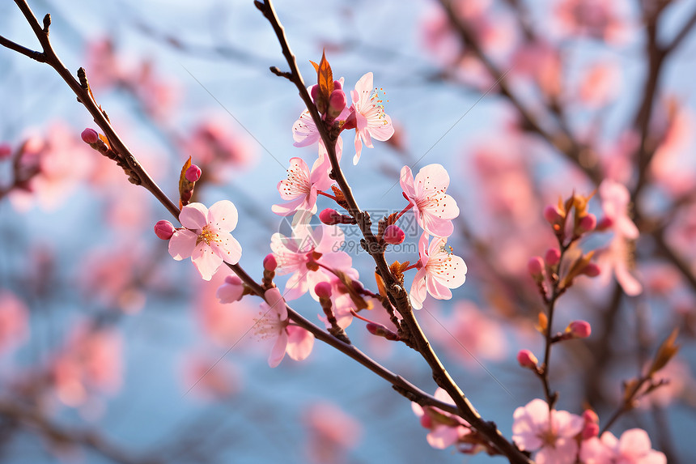
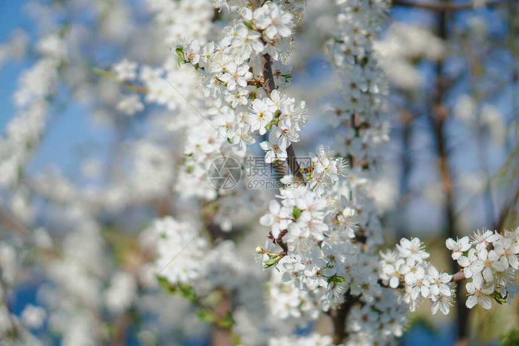

春日里的校园总是藏着数不尽的温柔与生机，清晨第一缕晨光穿透层层枝叶，轻轻洒落在校园的林荫小道上，唤醒了沉睡一整晚的草木繁花。道路两侧的迎春花早早缀满枝头，嫩黄的小花一簇挨着一簇，迎着微凉的春风轻轻摇曳，像是在和来往赶路的学子轻声问好。操场边的垂柳抽出崭新的绿芽，细长的柳条垂落在清澈的人工湖水面，泛起一圈圈细碎又温柔的涟漪，湖水澄澈见底，偶尔还能看见几尾小鱼自在穿梭，给静谧的校园添了灵动的烟火气息。 漫步在校园的转角花园，各色花草竞相开放，粉红的桃花、洁白的梨花、淡雅的海棠层层叠叠交织在一起，花香随着微风漫遍整个校园角落，深呼吸一口，满是清甜治愈的味道。课间时分，阳光正好落在草坪之上，绿油油的草地修剪得平整柔软，同学们三三两两坐在草地上看书闲谈、嬉笑打闹，暖阳、繁花、少年相映成趣，勾勒出春日校园最动人的画卷。每一处风光都不经雕琢，却浑然天成，见证着四季更迭，也陪伴着一届又一届学子度过青涩美好的校园时光，成为记忆里永远温暖的珍藏。
暮春时节的校园更是别有风韵，褪去早春的稚嫩，草木长得愈发繁茂葱郁，高大的香樟树撑开浓密的绿荫，为赶路的师生遮挡灼灼日光。雨后的校园空气格外清新，泥土混着草木的芬芳扑面而来，叶片上挂着晶莹的水珠，风一吹便簌簌滚落，砸在石板路上叮咚作响。图书馆后方的小山坡草木丛生，各色野生小花星星点点散落其间，飞鸟栖息在枝头婉转啼鸣，声声悦耳。在这里，自然之美与书香气息完美交融，没有城市的喧嚣浮躁，只有岁月静好的安然惬意。低头是满目繁花青草，抬头是蓝天白云晴空，目之所及皆是春色，心之所感皆是温柔，这样的校园自然风光，滋养心灵、治愈情绪，让身处其中的我们，永远心怀美好，满眼春光。


